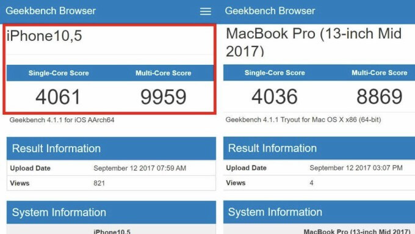

The Future of Apple's MacBooks
Merging iOS and macOS
For years, many have speculated that iOS and macOS will merge for a more "seamless" experience across Apple's ecosystem and devices. But this won't happen. Apple's CEO, Tim Cook, mentioned that merging iOS and macOS would comprise on some aspects for both operating systems and they both are great for different use cases. He mentioned that he has no plans of making Apple merge the two operating systems, although both will borrow appropriate features from each other.
The next step for iOS and macOS
Phil Schiller, Apple's SVP of Worldwide Marketing, mentioned that a major Mac App Store redesign is coming like the one we saw in iOS 11 and he assured Mac customers that they have not been forgotten. Current speculations suggest the next versions of iOS and macOS will include "universal apps" where a developer submits one app and that app can be run on both -- macOS and iOS. This is a big deal because it'll make Apple's ecosystem even tighter and it also naturally brings up the concerns of compiling these apps for ARM (Apple's A-chip series) and Intel (for all their Macs) processors which have drastically different architectures. If Apple can manage to make univesal apps big, they'll have a huge advantage over the industry and the Mac App Store will become far more notable and important in Apple's vision for desktop computing moving forward. With this model, if implemented correctly, both platforms become stronger and better integrated within the ecosystem while they also getting to keep their own strengths (iOS or macOS won' have to comprise in any way as Tim Cook suggested completely merging the to operating systems would).
The next step in hardware
The Apple designed A11 Bionic chip powering the new iPhones are incredibly fast and far ahead of the industry in performance.
They have benchmark scores considerably higher than the MacBook and even higher than the base MacBook Pro and some mid-tier
MacBook Pros.

Image credit: Yalu Jailbreak
Naturally, if Apple's silicon team is so far ahead, then why don't they put their own chips into their MacBook Pros or at least
their ultra-portable but underpowered MacBooks? This seems like a common-sense move. This would save them lots of money and also
decrease their reliance on Intel. Additionally, the A-series chips in the iPhones and ARM chips in general are far better at
power management, connectivity, and always-on functionalities. Microsoft realized this and they're working alongside
Qualcomm to bring the Snapdragon smartphone processors to Windows laptops and we can already see the results. Battery life on
these Windows machines have increased from 10 hours to an astonishing 20 hours of use, the laptops have the smartphone instant-on
capabilities when waking from sleep mode, and they're also LTE connected! However, since the processor architecture is different,
Microsoft had to recompile Windows 10 to support ARM instead of Intel's x86-64 architecture. So, most applications don't work and much
of Windows becomes a broken experience.
{kind=link}
Conclusion
Apple doesn't want to downgrade and comprimise its experience in any way so they haven't yet put their A11 Bionic chips in their MacBooks. When they begin accepting universal apps in the iOS and Mac App Stores, they will most likely create an under-the-hood mechanism in Xcode where it creates a build for Intel processors to run that app on Macs as well as an ARM version to run that same app on iPhones and iPads and even Apple Watches. Apple will most likely begin the ARM processor transition for their Macs starting with the MacBook -- a laptop aimed at general consumers for light-weight activities. The MacBook will be able to run many apps, have faster performance with far greater battery life, always-on and always-connected functionalities like a smartphone, and it will be integrated even more tightly within Apple's ecosytem. Over the next few years, they would most likely extend the A-series chip to the rest of the laptop line and possibly even to their desktop line one day. As soon as we see universal apps becoming a thing (most likely this summer), we can soon begin to expect Apple to begin their transition from Intel to their own ARM chips in their laptops. With this slow and tactful transition, they wouldn't be comprising on the user-experience anywhere while gaining all the advantages that ARM processors have to offer.